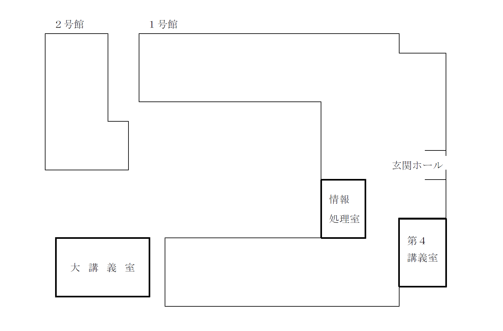
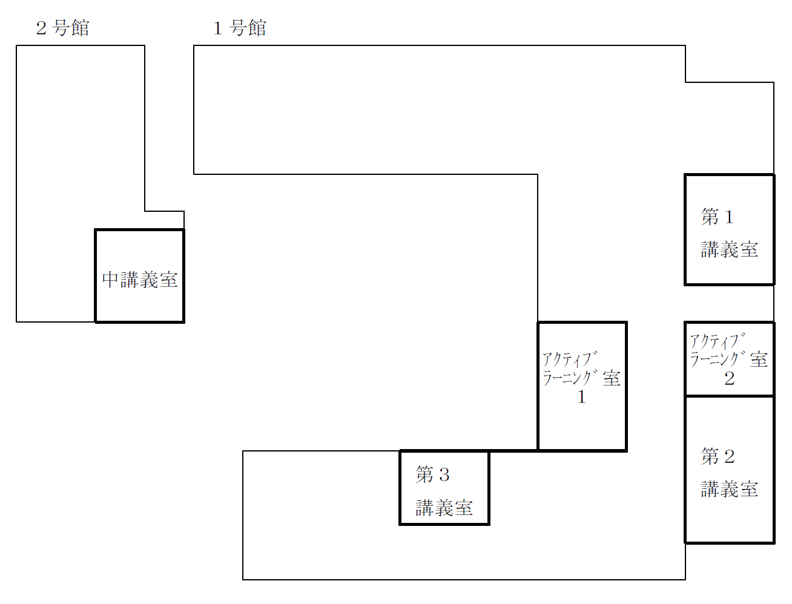

薬学部
マップ上のアイコン(AEDを除く)をタップすると，その場所の写真をみることができます。
| アイコン | 説明 |
|---|---|
| AED | |
| エレベーター | |
| 多目的トイレ | |
| スロープ自動扉 | |
| スロープ手動扉 |
1F



エレベーター
多目的トイレ
スロープ(手動扉)
スロープの角度
| 平均 |
|---|
| 3° |
スロープ(手動扉)
スロープの角度
| 上部 | 中部 | 下部 | 平均 |
|---|---|---|---|
| 5.9° | 5.5° | 6.1° | 5.8° |
スロープ(自動扉)
スロープの角度
| 上部 | 中部 | 下部 | 平均 |
|---|---|---|---|
| 3.4° | 4.2° | 4.1° | 3.9° |
スロープ(自動扉)
スロープの角度
| 上部 | 中部 | 下部 | 平均 |
|---|---|---|---|
| 4.2° | 3.3° | 3.4° | 3.6° |
スロープ(手動扉)
スロープの角度
| 上部 | 中部 | 下部 | 平均 |
|---|---|---|---|
| 3.7° | 4° | 3.3° | 3.7° |
スロープ(手動扉)
スロープの角度
| 上部 | 中部 | 下部 | 平均 | |
|---|---|---|---|---|
| 左 | 9.5° | 9.6° | 9° | 9.4° |
| 右 | 11.7° | 13.1° | 13.2° | 12.7° |
スロープ(自動扉)
スロープの角度
| 平均 |
|---|
| 3° |
2F


多目的トイレ